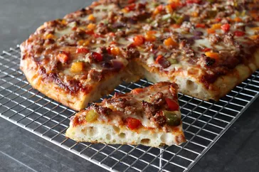

Home
Pizza

Description
This Roman-style pizza has a long-fermented thicker crust, and is
absolutely awesome. Topped with prepared sauce, sausage, sweet peppers,
and three cheeses, or with whatever you like, you'll want to make this on
repeat.
Ingredients
- 4 1/4 cups bread flour (500 grams)
- 1 rounded teaspoon dry yeast (3.5 grams)
- 1 cup diced sweet peppers and onions
- 1 1/2 cups prepared pizza sauce
- 1/4 cup olive oil, divided
Steps
-
For dough, mix together flour, yeast, and water with a wooden spoon
until almost all flour has disappeared and a rough dough is formed.
-
Add salt and olive oil and continue mixing with a spoon for about 3
minutes until a smooth, very soft and sticky dough forms. Clean off
spoon and scrape down bowl. Cover and let rest 15 minutes.
-
Perform first set of rotating folds: leaving dough in the bowl, with a
damp hand, reach under and grab the dough at the edge of the bowl, pull
it and stretch it over the top. Rotate the bowl a few inches and repeat
about 10 or 12 times, then gather the dough into a ball as best you can,
turning the smoothest side up
-
Drizzle a teaspoon of olive oil over dough and brush to coat evenly.